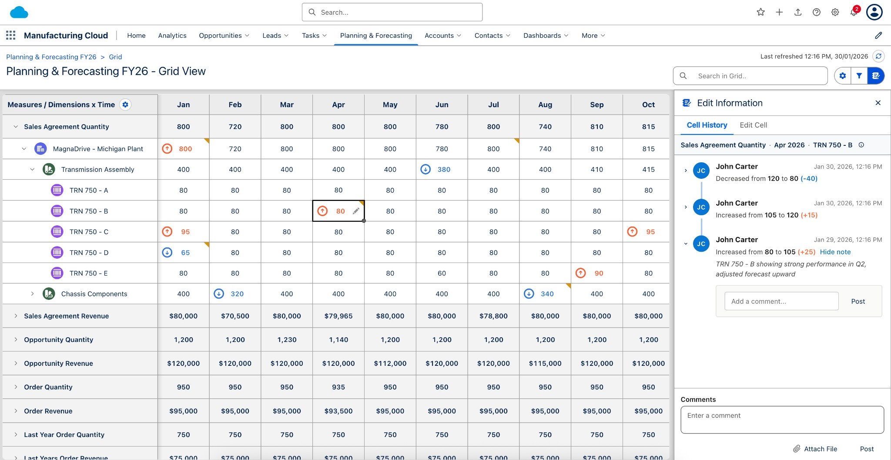
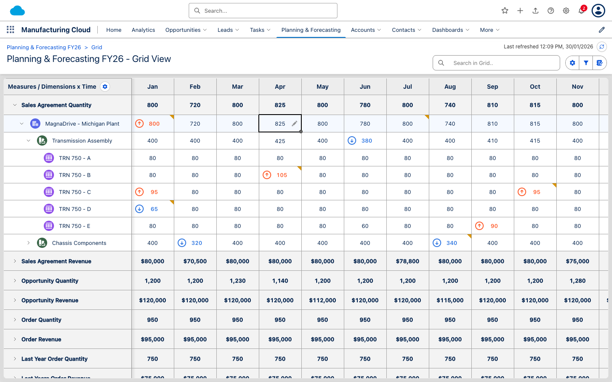
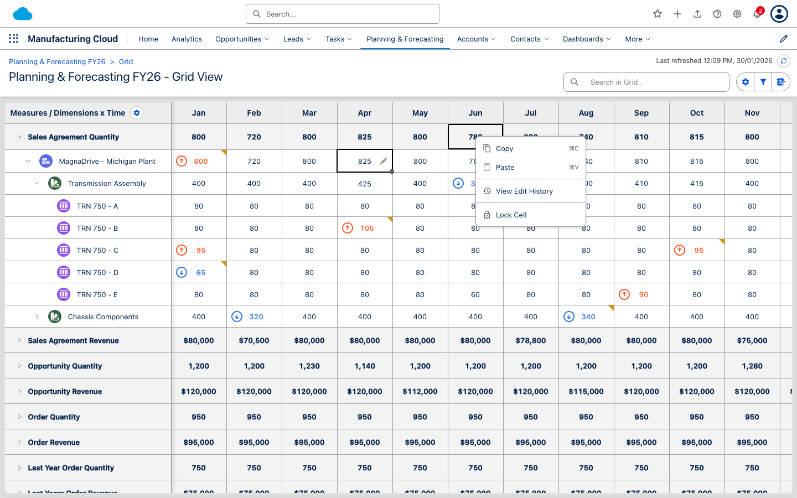
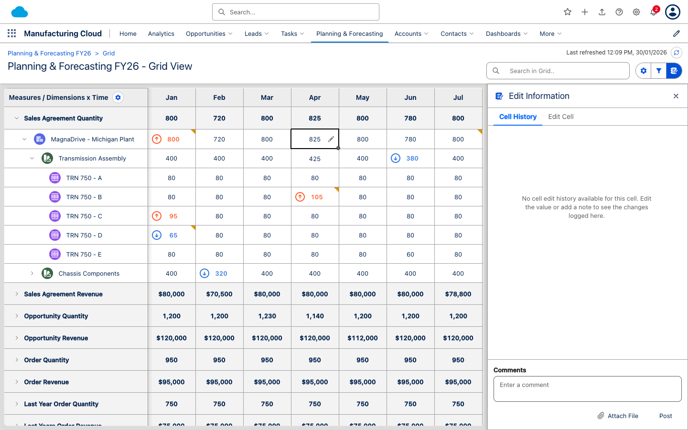
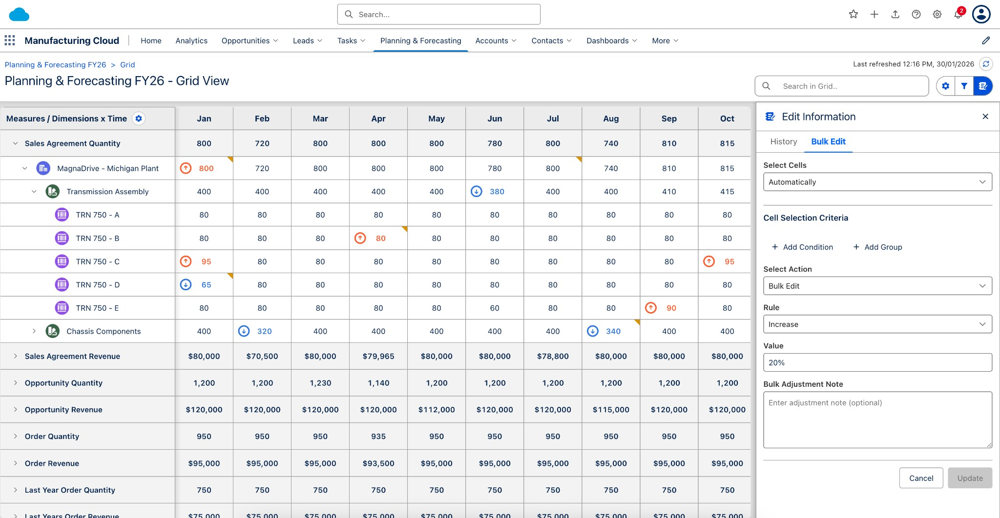
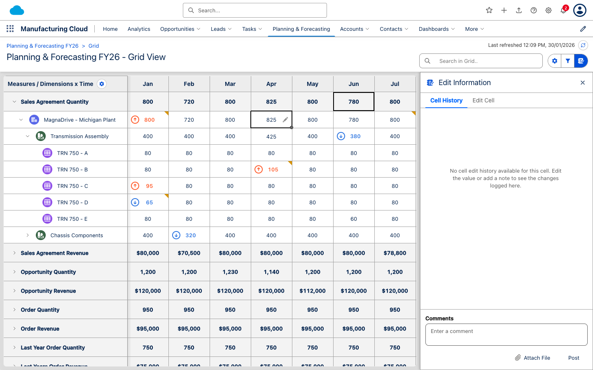
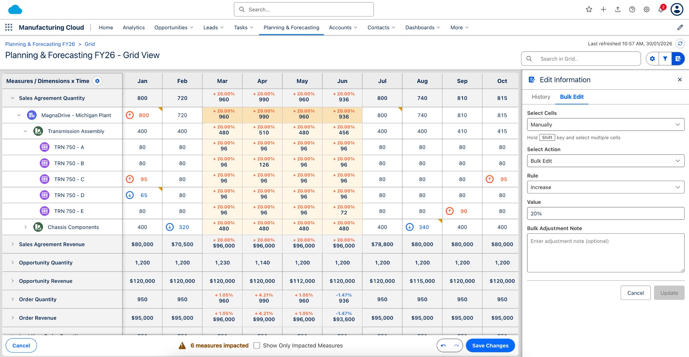

UX Comparison Report
Manufacturing Cloud Forecasting & Planning
vs. Market Competitors
A focused analysis comparing user experience across our solution and leading enterprise planning tools
Key Finding: Our Manufacturing Cloud Forecasting & Planning solution demonstrates strong UX fundamentals with modern design patterns, scoring 8.0/10 overall. We excel in Salesforce ecosystem integration and collaboration features, but face strong competition from Pigment (9.0/10) in the "modern UX" category.
5. Cell Details & History Panel

Salesforce-inspired activity timeline showing detailed edit history. Displays user name, timestamp, value changes (e.g., "Decreased from 120 to 80 (-40)"), and adjustment notes. History entries are chronologically ordered with expandable notes. Users can add comments directly to specific history entries or post general comments.
✓ Activity Timeline Features:
- Vertical Connector Line: Between events, like Salesforce
- User Avatars: Initials-based avatars with consistent styling
- Threaded Discussions: Reply directly to specific edits
- Expand/Collapse: Detailed info hidden until needed
- Value Changes: Clear before/after with delta calculation
Competitive Advantage: SAP and Oracle only support attachments or basic notes. Our threaded timeline matches Pigment's collaboration features while leveraging Salesforce's familiar pattern.
7. Header Design

Two-row header matching Salesforce Lightning template with cloud logo, search bar, navigation tabs, and user icons.
✓ Salesforce Lightning Design System
Our header follows Salesforce Lightning Design System patterns, providing instant familiarity for millions of Salesforce users. This reduces learning curve and increases adoption speed compared to competitors with proprietary interfaces.
9. Bulk Update & Mass Operations

Select multiple cells using Shift+Click or Cmd/Ctrl+Click. Selected cells are highlighted with clear visual indicators.

Right-click context menu shows "Bulk Edit" option when multiple cells are selected, providing quick access to mass update functionality.

Cell Details & Updates panel automatically switches to "Bulk Edit" tab when multiple cells are selected, showing update rules and value input.

Advanced form-based bulk edit with criteria-based cell selection. Users can select cells "Automatically" using conditions and groups, or "Manually" by clicking. Form includes: Select Action (Bulk Edit), Rule (Increase/Decrease/Set to/Multiply/Divide), Value input (supports percentages like "20%"), and optional Bulk Adjustment Note. This provides powerful, Excel-like bulk operations with Salesforce-native UI patterns.

Google Sheets-like fill handle (small dot) at bottom-right corner of selected cell for drag-based bulk selection across ranges.

Complete bulk edit workflow: Grid showing selected cells with percentage changes (e.g., "+20.00%"), Bulk Edit panel open with Increase rule set to "20%", and visual indicators (arrows) showing which cells were updated. The interface shows real-time feedback with percentage changes displayed directly in cells.
Our Solution
- Multiple Selection Methods: Shift+Click, Cmd/Ctrl+Click, Fill Handle drag
- Context Menu Access: Right-click "Bulk Edit" option
- Panel Integration: Automatic switch to Bulk Edit tab
- Flexible Rules: Increase, Decrease, Set to, Multiply, Divide
- Percentage Support: "10%" increases by 10%
- Bulk Notes: Single note applies to all updated cells
- Visual Feedback: Clear selection indicators
- Order Preservation: Updates maintain selection order
- Criteria-Based Selection: "Automatically" select cells using conditions and groups
- Form-Based Interface: Clean form layout with dropdowns and input fields
Competitors
- Pigment: ✓ Similar bulk operations, modern UI
- Anaplan: ✓ Bulk update available, complex interface
- SAP: ✗ Limited bulk operations, form-based
- Oracle: ✗ Basic bulk edit, requires multiple steps
- Workday: ✓ Bulk update available, simpler rules
Key Differentiator: Our fill handle drag selection and percentage-based updates provide Excel-like familiarity while maintaining Salesforce-native integration.
UX Advantages:
- Familiar Patterns: Fill handle and selection methods match Excel/Google Sheets expectations
- Multiple Access Points: Context menu, panel tab, and keyboard shortcuts provide flexibility
- Smart Defaults: Panel automatically switches to appropriate tab based on selection
- Percentage Calculations: Natural language like "10%" is more intuitive than manual calculations
- Bulk Documentation: Single note applies to all cells, reducing repetitive data entry
- Visual Clarity: Selected cells clearly highlighted, making it easy to verify selection before update
- Real-time Feedback: Percentage changes displayed directly in cells (e.g., "+20.00%") showing exactly what changed
- Visual Indicators: Arrow icons (orange up, blue down) provide immediate visual feedback on cell changes
- Impacted Measures Tracking: Bottom bar shows "X measures impacted" helping users understand scope of changes
Detailed Bulk Edit Function Comparison
| Feature |
Our Solution |
Pigment |
Anaplan |
SAP |
Oracle |
Workday |
| Selection Methods |
Shift+Click, Cmd/Ctrl+Click, Fill Handle |
Multiple methods |
Shift+Click, limited |
Form-based selection |
Form-based selection |
Shift+Click |
| Update Rules |
5 rules: Increase, Decrease, Set to, Multiply, Divide |
Comprehensive rules |
Advanced formulas |
Basic: Set to, Add |
Basic: Set to, Add |
Standard rules |
| Percentage Support |
✓ Natural syntax "20%" |
✓ Yes |
Formula-based |
✗ Manual calculation |
✗ Manual calculation |
✓ Limited |
| Visual Feedback in Cells |
✓ Percentage shown in cell |
✓ Visual indicators |
Color coding |
✗ No inline display |
✗ No inline display |
Badge indicators |
| Change Indicators |
✓ Arrow icons (up/down) |
✓ Dot indicators |
Color changes |
✗ None |
✗ None |
Status badges |
| Bulk Notes |
✓ Single note for all cells |
✓ Yes |
Per-cell notes |
✗ Not available |
✗ Not available |
Limited |
| Impact Preview |
✓ "X measures impacted" |
✓ Preview before apply |
Summary view |
✗ No preview |
✗ No preview |
Basic summary |
| Context Menu Access |
✓ Right-click "Bulk Edit" |
✓ Context menu |
Toolbar button |
✗ Menu only |
✗ Menu only |
Toolbar |
| Panel Integration |
✓ Auto-switch to Bulk Edit tab |
✓ Contextual panel |
Separate dialog |
✗ Modal dialog |
✗ Modal dialog |
Side panel |
| Fill Handle Selection |
✓ Google Sheets-like drag |
✓ Yes |
✗ No |
✗ No |
✗ No |
✗ No |
Key Competitive Advantages:
- Percentage Display in Cells: Unlike SAP and Oracle which require users to calculate percentages manually, our solution displays percentage changes directly in cells (e.g., "+20.00% 960"), making it immediately clear what changed and by how much.
- Visual Arrow Indicators: Orange up arrows and blue down arrows provide instant visual feedback on which cells increased or decreased, without requiring users to compare values.
- Fill Handle Drag Selection: Excel/Google Sheets-like fill handle allows users to quickly select ranges by dragging, a feature missing in Anaplan, SAP, Oracle, and Workday.
- Natural Percentage Syntax: Users can simply type "20%" instead of calculating 1.2x multiplier, making bulk updates more intuitive than Anaplan's formula-based approach.
- Impacted Measures Tracking: Bottom bar shows "X measures impacted" helping users understand the scope of their bulk changes before saving.
- Non-Modal Panel: Unlike SAP and Oracle's modal dialogs that block the grid, our slide-out panel allows users to see both the form and the grid simultaneously.
🎨 Salesforce Lightning Design System
Native integration with Salesforce Lightning Design System provides familiar experience for millions of existing Salesforce users, dramatically reducing learning curve.
✓ Advantage: Zero learning curve for SF users
See: Header Design screenshot
📊 Three Grid Layouts
Flexible layout options (Measures×Time, Dimensions×Time, Time×Dimensions) allow users to choose the view that best fits their workflow.
✓ Advantage: More flexible than SAP/Oracle fixed layouts
See: Full Grid View screenshot (latest)
🔍 Real-time Search with Highlighting
Instant filtering across hierarchies with visual match highlighting. Columns automatically filter to show only relevant time periods.
✓ Advantage: Better than Anaplan/SAP/Oracle basic search
See: Search Highlighting screenshot
💬 Salesforce-style Activity Timeline
Edit history with threaded discussions, consistent with Salesforce record pages. Users feel at home in familiar interface patterns.
✓ Advantage: Unique to Salesforce ecosystem
See: Cell Details Panel screenshot
📝 Inline Adjustment Notes
Add context to cell changes without leaving the grid. Notes appear in edit history timeline with full threading support.
✓ Advantage: Better than SAP/Oracle attachment-only approach
See: Cell Details Panel screenshot
🎯 Modern Toolbar Design
Clean button groups with active state indicators. Pill-shaped containers with consistent iconography.
✓ Advantage: More modern than legacy toolbar designs
See: Button Group Toolbar screenshot
📱 Slide-out Panels
Non-modal slide-out panels for settings, filters, and cell details. Users maintain context while making changes.
✓ Advantage: Better than SAP/Oracle modal dialogs
See: Settings Panel & Filters Panel screenshots
⚡ Fast Learning Curve
Users can be productive within hours, compared to weeks for SAP and Oracle implementations.
✓ Advantage: Rapid time-to-value
See: All screenshots demonstrate intuitive design
Pigment - The UX Benchmark (9.0/10)
Why Pigment Leads: Founded in 2019 with UX-first philosophy, specifically designed to disrupt legacy planning tools. Interface takes inspiration from modern tools like Notion and Figma.
UX Strengths
- Pixel-perfect modern design with smooth animations
- Real-time collaboration (like Google Docs)
- Intuitive drag-and-drop modeling
- Dark mode support
- Comprehensive keyboard shortcuts for power users
- Generous spacing and clean typography
Where We Can Compete
- Salesforce-native integration: We win - Pigment requires connectors
- Manufacturing-specific workflows: Our domain expertise
- Familiar UI for SF users: Lower learning curve for SF ecosystem
Key Insight: Pigment sets the standard for modern planning UX. We should aspire to match their polish while leveraging our Salesforce integration advantage.
Anaplan - Enterprise Standard (6.9/10)
Mature but Aging Interface: Anaplan has been around since 2006 and their interface shows its age. While functional, it prioritizes power over polish.
UX Strengths
- Powerful modeling interface
- Comprehensive dashboards
- Good keyboard navigation
- Robust export options
UX Weaknesses
- Cluttered interface
- Steep learning curve
- Modal-heavy interactions
- Dated visual design
- Complex navigation structure
Key Insight: Anaplan prioritizes functionality over UX. We can win on ease of use and modern design while matching their core capabilities.
SAP IBP & Analytics Cloud (4.9/10)
Enterprise Complexity: SAP's planning tools inherit the complexity of the broader SAP ecosystem. While powerful, the UX is designed for trained administrators rather than business users.
UX Strengths
- Fiori design system (improving)
- Deep ERP integration
- Comprehensive functionality
UX Weaknesses
- Very steep learning curve (weeks of training)
- Complex multi-screen workflows
- Overwhelming for new users
- Inconsistent UI patterns
- Heavy, slow-loading interfaces
- Desktop-only experience
Key Insight: SAP prioritizes power at the cost of usability. We can win decisively on UX while targeting mid-market customers who don't need SAP's full complexity.
Oracle EPM Cloud (5.2/10)
Legacy Meets Cloud: Oracle's EPM Cloud modernizes their Hyperion legacy but still carries enterprise complexity. The Redwood design system is improving things gradually.
UX Strengths
- Redwood design (newer, cleaner)
- Strong financial close UX
- Good reporting interfaces
UX Weaknesses
- Complex setup screens
- Multiple products, inconsistent UX
- Heavy admin interfaces
- Slow cloud performance
- Desktop-only experience
Key Insight: Oracle is improving but still carries legacy weight. We can win on modern UX and faster implementation.
Workday Adaptive Planning (7.5/10)
User-Friendly Enterprise: Workday has invested heavily in UX, resulting in a clean, intuitive interface that balances power with usability.
UX Strengths
- Clean, modern interface
- Good mobile app
- Intuitive navigation
- Strong Workday integration
UX Weaknesses
- Limited grid flexibility
- Less advanced search capabilities
- Basic collaboration features
Key Insight: Workday is a strong UX competitor, but they focus on Workday ecosystem. We can compete on Salesforce integration and manufacturing-specific features.
🎬 Smooth Animations
Add smooth transitions like Pigment: expand/collapse animations, panel slide transitions, loading skeletons.
Current: Basic animations
Target: Smooth, polished transitions
⌨️ Keyboard Shortcuts
Comprehensive keyboard shortcuts for power users: navigation, editing, bulk operations.
Current: Basic shortcuts
Target: Full keyboard navigation
📋 Multi-cell Operations
Copy/paste across cell ranges, fill handle drag (already implemented), bulk formatting.
Current: Roadmap item
Target: Full Excel-like operations
✨ Visual Polish
Micro-interactions, hover states, loading skeletons, smooth transitions between states.
Current: Functional but basic
Target: Polished, delightful interactions
| Rank |
Solution |
Score |
Best For |
Key Differentiator |
| 1 |
Pigment |
9.0/10 |
Modern companies prioritizing UX |
Pixel-perfect design, smooth animations |
| 2 |
Our Solution |
8.3/10 |
Salesforce ecosystem users |
Native SF integration, familiar UX |
| 3 |
Workday Adaptive |
7.5/10 |
Workday customers |
Clean interface, good mobile app |
| 4 |
Anaplan |
6.9/10 |
Power users needing flexibility |
Powerful modeling, comprehensive features |
| 5 |
Oracle EPM |
5.2/10 |
Oracle ecosystem enterprises |
Redwood design improving |
| 6 |
SAP IBP |
4.9/10 |
SAP-centric organizations |
Deep ERP integration |
Bottom Line
Our solution delivers strong UX that significantly outperforms legacy enterprise tools (SAP, Oracle, Anaplan) while approaching—but not yet matching—the UX excellence of Pigment. Our key differentiator is native Salesforce integration, which provides a familiar experience for the millions of users already in the Salesforce ecosystem.
With focused improvements in animations, keyboard shortcuts, and mobile responsiveness, we can further close the gap with Pigment and establish ourselves as the leading planning tool for Salesforce Manufacturing Cloud customers.